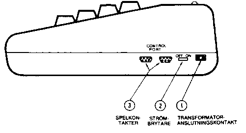
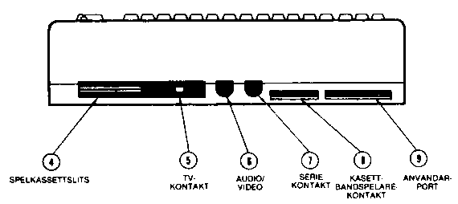
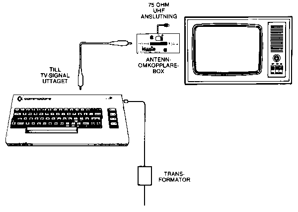
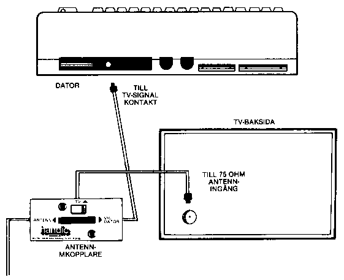
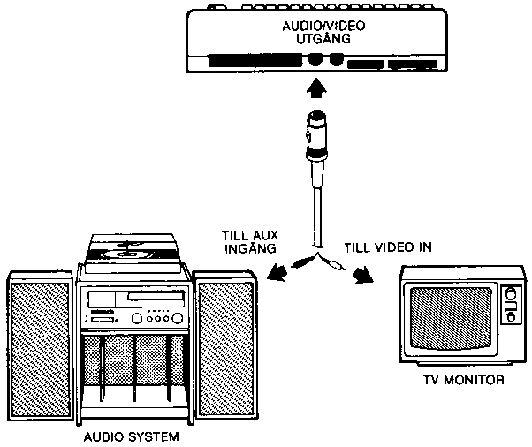
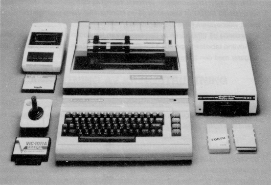
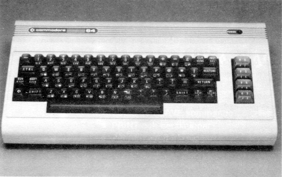

Följande steg för steg instruktion talar om hur du ansluter Commodore 64 till din TV, Ijudsystem eller monitor och kontrollerar att allt fungerar tillfredsställande.
Innan du ansluter något till din dator kontrollera innehållet i förpackningen. Den ska innehålla följande:
Om något saknas kontrollera med den butik där apparaten köpts.
Låt oss först ta en titt på de olika anslutningarna på datorn och deras användning.


1. Kontakt för kabel från transformatorn.
2. STRÖMBRYTARE TILL/FRÅN (OBS transformatorn står på även om Commodore 64
inte används, drag därför ut nätkabeln till transformatorn när datorn ej
används.
3. SPELKONTAKTER Vardera spelkontakten är avsedd för JOYSTICK, PADDLE eller
LJUSPENNA.
4. KASSETTSLITS för program eller spelkassetter. (ROM)
5. TV-ANSLUTNING. Denna kontakt levererar både bild och ljudsignal till din
TV.
6. AUDIO och VIDEO uttag. Denna kontakt levererar DIREKT AUDIO vilken kan
anslutas till din HlFI-anläggning och en COMPOSITE VIDEO signal till en
eventuell TV-monitor.
7. SERIE I/O. Avsett för direktanslutning av skrivare eller enkelt
flexskiveminne.
8. KASSETTBANDSPELARE. En bandspelare typ 1530 kan anslutas här.
9. ANVÄNDARPORT. Olika interfacekassetter såsom RS232, MODEM mm. anslutes
här.
Anslut datorn till TV'n så som bilden på sidan 4 [nedan] visar.

1. Anslut ena ändan av TV-kabeln till TV-signalkontakten på baksidan av din
Commodore 64. Tryck den rakt in.
2. Anslut den andra ändan av kabeln till antennomkopplingsboxen. Tryck den
enbart rakt in.
3. Om du har TV-antennkabel, koppla ur den från TV-apparaten.
4. Anslut din TV-antennkabel till den bipackade antennomkopplaren, i uttaget
märkt ANTENN.
5. Anslut kabeln från antennomkopplaren till TV-apparatens antennuttag.
6. Ställ antennomkopplaren i läge DATOR.
7. Sätt i den runda kontakten från transformatorenheten i det runda uttaget
närmast datorns nätströmbrytare. Den har ett styrspår varför den enbart
passar på ett sätt.
8. Anslut transformatorns nätkontakt till vägguttaget.

Commodore 64 är nu korrekt ansluten. Inga ytterligare anslutningar behövs för att använda din dator tillsammans med TV. Antennomkopplaren ansluter datorn till TV'n när omkopplaren är i läge "DATOR". Med omkopplaren är i läge "TV" kan du använda TV'n som vanligt.
Då Commodore 64 erbjuder Ijud med Hl-FI-kvalitet kanske du önskar att återge det genom en Hl-FI-anläggning för att få bästa möjliga Ijud. Dessutom finnes ut från din dator en standard "COMPOSITE" videosignal, vilken kan anslutas till en TV-monitor. Detta ger en förbättrad bildkvalitet.
Detta har gjorts möjligt genom det speciella uttaget på baksidan av Commodore 64. Den lättaste vägen att få tillgång till dessa signaler är att använda en standard 5-pin DIN audiokabel, (ingår ej i leveransen). Denna kabel kopplas direkt till datorns AUDIO/VIDEO kontakt. Två av de fyra stiften innehåller audio- och videosignalen. Om du önskar kan du tillverka din egen kabel med hjälp av tabellen i APPENDIX 1.
Vanligtvis kommer audiosignalen ut genom en svart kabel. Denna kontakt kan anslutas till AUX ingången på din HlFI-anläggning eller AUDIO IN på en monitor eller annat videosystem såsom videobandspelare.
Den vita eller röda kontakten levererar vanligtvis videosignalen. Denna kopplas direkt till VIDEO IN kontakten på en monitor eller video ingången på något annat videosystem (Videobandspelare).
Beroende på tillverkaren av DlN-kabeln kan färgkoden på kontakterna variera. Använd tabellen i Appendix 1 för att kontrollera kabeln om inte Ijud eller bild fungerar med den föreslagna inkopplingen.

Om du köpt kringutrustning såsom 1541 flexskiveenhet eller 1515 skrivare kan du ansluta dem nu. Läs bruksanvisningarna för respektive enhet för korrekt inkoppling.
Ett komplett system kan se ut som nedan

**** COMMODORE 64 BASIC V2 ****
64K RAM SYSTEM 38911 BASIC BYTES FREE
READY.
_ <----------- MARKÖREN VÄNTAR ATT DU SKA SKRIVA NÅGOT
Om du inte får förväntat resultat, kontrollera då samtliga kablar och kontakter. Följande tabell hjälper dig att finna orsaken:
| Symtom | Orsak | Åtgärd |
| Ingen bild (lampan lyser ej) | Strömbrytaren i OFF | Försäkra dig om att strömbrytaren är i läge ON |
| Nätkabeln inte ansluten | Kontrollera att nätkabeln sitter i väggkontakten | |
| Transformatorn inte ansluten | Kontrollera att kontakten sitter rätt | |
| Säkringen utlöst | Lämna din Commodore 64 till en auktoriserad återförsäljare för säkringsbyte | |
| Ingen bild (lampan lyser) | TV'n inställd på fel kanal | Kontrollera om det finns någon bild omkring kanal 36 |
| Fel anslutning till TV | Datorn ska inkopplas till UHF-antenn-anslutningen | |
| Sporadisk bild när ROMkassett används | Kassetten gör inte kontakt ordentligt | Stäng av, sätt in kassetten riktigt och starta på nytt |
| Bild utan färg | Dåligt inställd TV | Justera TV'n |
| Bild med dåliga färger | Felaktigt justerade färgkontroller på TV'n | Justera färgkontrollerna |
| Bild med högt bakgrunsbrus | TV-volyumkontroll justerad för hög | Justera volymkontrollen |
| Bra bild men svagt ljud | TV-volym för låg | Justera volymkontrollen |
Den blinkande fyrkanten närmast ordet READY kallas MARKÖR eller CURSOR och indikerar den plats där det du skriver på tangentbordet kommer att skrivas på skärmen. När du skriver flyttar sig MARKÖREN ett steg till höger vartefter markörens position ersätts med det tecken du skriver. Prova att skriva på tangentbordet och se hur bokstäverna du skriver visas på TV-skärmen.
Det finns ett enkelt sätt att få ett färgmönster på TV-skärmen som kan användas för färgjustering. Även om du ännu inte är van vid datorn ännu, följ bara anvisningarna så får du se hur enkelt det är att använda Commodore 64.
Leta först rätt på tangenten märkt CTRL. Den finns i tangentbordets vänsterkant. CTRL står för kontroll (ConTRoL), och används tillsammans med andra tangenter för att instruera datorn att utföra en speciell uppgift.

När en kontrollfunktion ska användas håller man CTRL nedtryckt och trycker därefter på den andra tangenten.Prova följande: Håll CTRL-tangenten nedtryckt och tryck därefter på 9-tangenten. Släpp därefter upp båda tangenterna. Inget påtagligt ska nu ha hänt, men om någon tangent nu trycks ned kommer skriften på skärmen att visas omvänd (reverserad). Denna skiljer sig markant från startmeddelandet eller det du skrivit tidigare.
Tryck nu ned mellanslagstangenten SPACE. Vad händer? Om du gjort ovanstående korrekt ser du en ljusblått fält röra sig över skärmen och därefter flytta ned till nästa rad så länge som SPACE-tangenten är nedtryckt.
**** COMMODORE 64 BASIC V2 ****
64K RAM SYSTEM 38911 BASIC BYTES FREE
READY.
____________________________
__________
Håll nu nu nere CTRL under tiden du trycker ned någon annan av siffertangenterna. De har var sin färg markerad på framsidan. Allt som skrivs på skärmen från och med nu får den nya färgen. Som exempel, tryck ned CTRL och tangenten 8. Släpp upp dessa och tryck på SPACE.
Se nu på skärmen. Färgfältet ritas nu gult. På liknande sätt kan du ändra genom att hålla ned CTRL och trycka på respektive siffertangent.
Ändra färgfälten några gånger och använd sedan denna bild för att justera din TV så färgerna återges riktigt.
Skärmen bör se ut ungefär som på bilden:
**** COMMODORE 64 BASIC V2 ****
64K RAM SYSTEM 38911 BASIC BYTES FREE
READY.
_________________________ <------ 3 Röd balk
_______ ____________ ____ <------ 6 Grön balk
__________ ______________ <------ 7 Blå balk
____________ <------ 8 Gul balk
Nu är allt justerat och fungerar riktigt. De följande kapitels kommer att introducera programmeringsspråket BASIC. Du kan emellertid omgående börja använda en del av de många färdiga program som finns till Commodore 64 utan att känna till något om datorprogrammering.
Dessa programpaket innehåller vanligtvis detaljerad information hur programmet ska användas. Vi föreslår emellertid att du läser vidare några kapitel i denna bok för att bli mer bekant med handhavandet av ditt nya datorsystem.